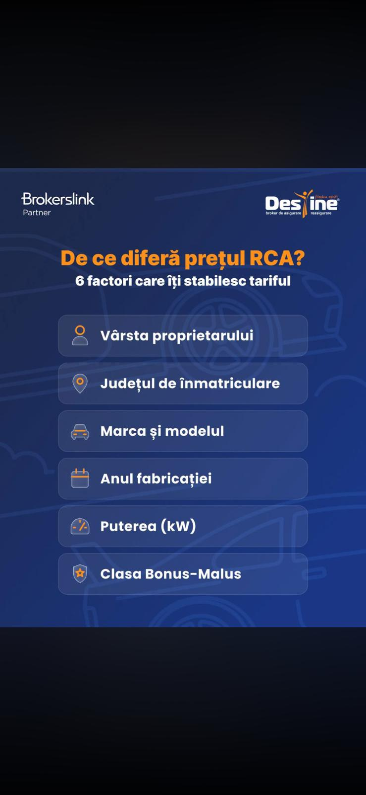

Ghid pentru polița RCA
De ce plătește vecinul tău mai puțin la RCA decât tine, deși aveți mașini asemănătoare?
Nu există un preț unic pentru toate persoanele și vehiculele. Tariful depinde de profilul de risc, de datele utilizate de asigurător și de regulile de tarifare ale acestuia.

Solicită o comparație a ofertelor disponibile pentru datele tale. Marius Popa te poate ajuta să înțelegi variantele și condițiile aplicabile.
Criteriile și ponderile diferă între asigurători. Prețul final se stabilește numai pe baza unei oferte concrete.